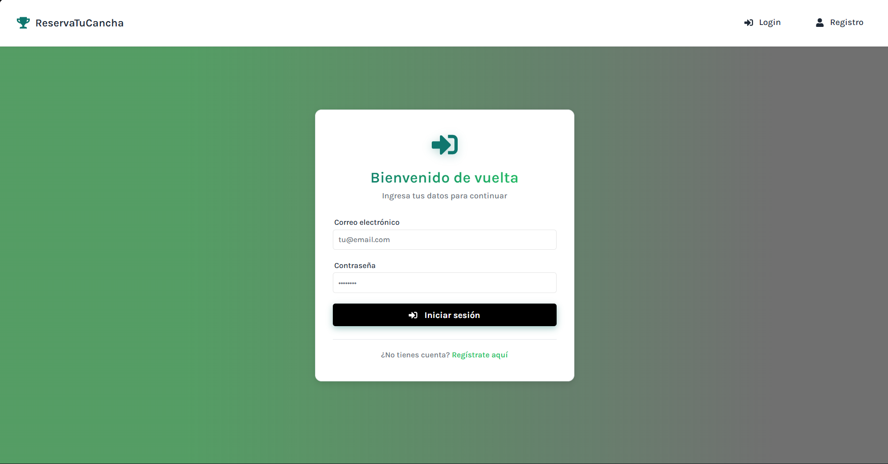
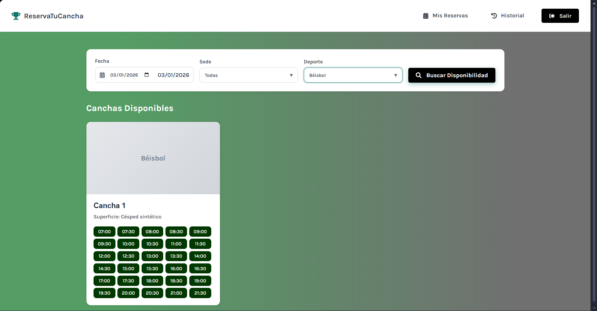
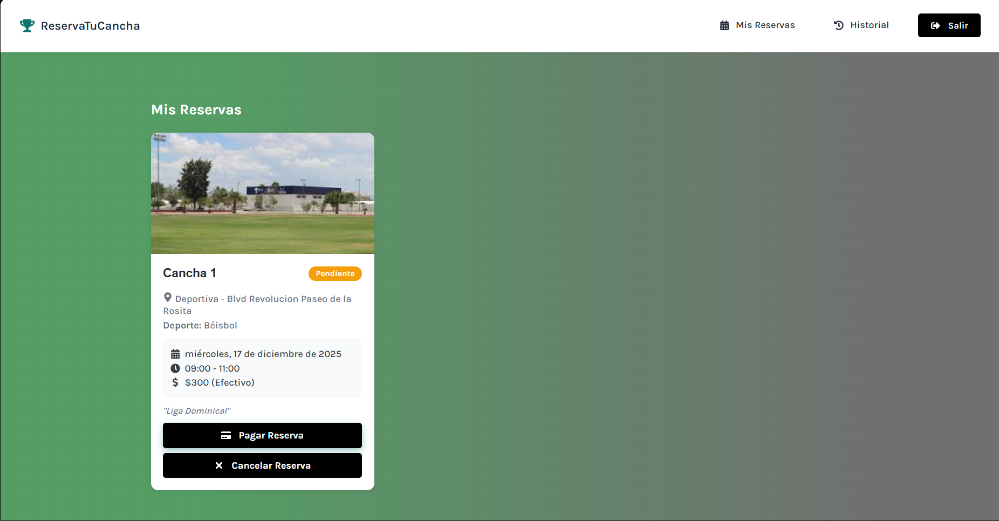
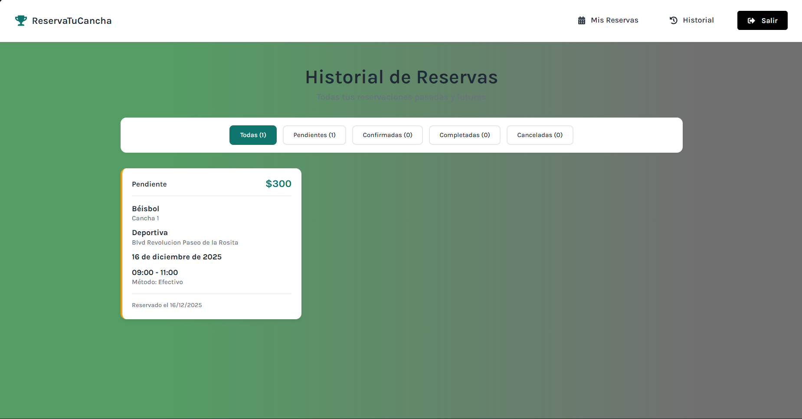
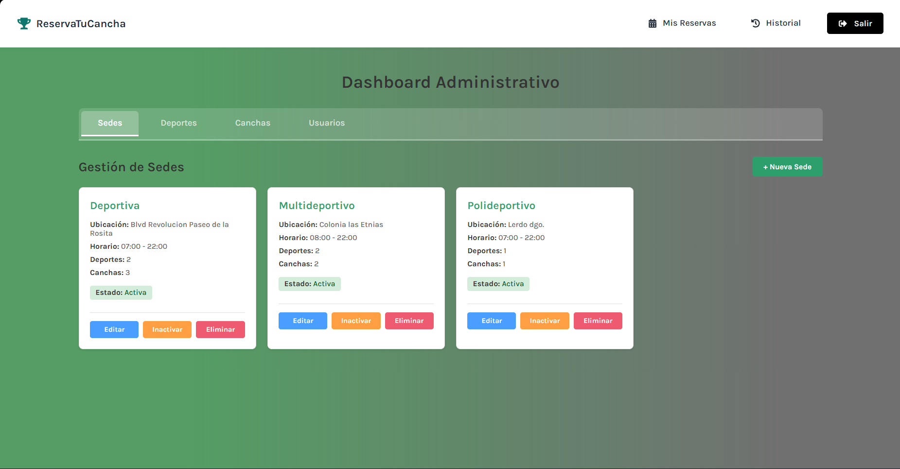
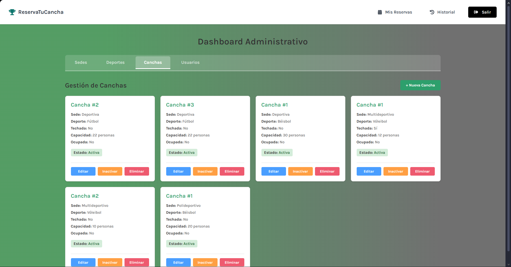

Overview
A comprehensive web application for managing sports court reservations, built with the MERN stack
(MongoDB, Express.js, React, Node.js). This full-stack project was developed to streamline the
booking process for sports facilities, addressing the common challenges of scheduling conflicts,
manual reservation management, and lack of real-time availability information.
The system provides an intuitive interface for users to view available time slots, make reservations,
and manage their bookings, while administrators can efficiently oversee all facility operations,
user management, and payment processing. The application features real-time updates, ensuring that
availability information is always current and preventing double bookings.
Features
- User Authentication: Secure registration and login system with JWT tokens
- Real-Time Availability: Live calendar showing available and booked time slots
- Interactive Booking: Easy-to-use interface for selecting dates, times, and court types
- User Dashboard: Personal panel to view, modify, and cancel reservations
- Admin Panel: Comprehensive management system for courts, schedules, and users
- Payment Integration: Secure payment processing for reservation fees
- Booking History: Complete record of past and upcoming reservations
- Search and Filter: Advanced filtering by sport type, date, time, and location
- Responsive Design: Fully optimized for desktop, tablet, and mobile devices
- Conflict Prevention: Automatic validation to prevent overlapping bookings
- Multiple Court Types: Support for different sports (soccer, basketball, tennis, etc.)
Gallery






Technologies Used
React
Node.js
Express.js
MongoDB
Mongoose
JWT
Bcrypt
React Router
Axios
Context API
CSS3
RESTful API
System Architecture
The application follows a modern three-tier architecture with clear separation of concerns:
- Frontend (React): Single-page application with component-based architecture,
managing state with Context API and handling routing with React Router
- Backend (Node.js + Express): RESTful API server handling authentication,
business logic, and database operations with proper middleware implementation
- Database (MongoDB): NoSQL database storing users, reservations, courts,
and payment information with Mongoose for schema validation
Key Learnings
- Full-stack development workflow from conception to deployment
- RESTful API design and implementation best practices
- JWT-based authentication and authorization
- State management in React applications
- Database schema design and relationship modeling
- Real-time data synchronization techniques
- Responsive design principles and mobile-first approach